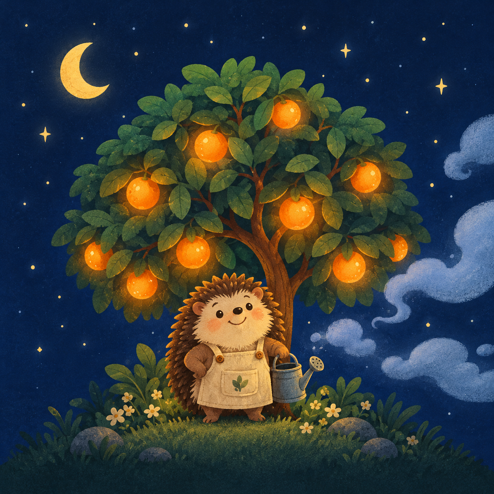

A Rhythm Defense in Three Lanes
왼쪽 울타리를 지키면서 안개 웨이브 10개를 막아 내세요. 10번째 웨이브에는 우두머리가 나타나요. 울타리 체력(판 위 가운데 막대)이 0이 되면 패배예요. 가진 열매 수는 심기 버튼 위 초록 배지에 보여요.
과수원 전체가 하나의 박자에 맞춰 흔들려요. 나무를 둘러싼 고리가 점점 작아지다가 나무에 닿는 순간이 바로 박자예요. 웨이브가 올라갈수록 박자도 빨라져요.
줄마다 나무가 한 그루씩 있고, 같은 줄에 안개가 나타나면 알아서 열매를 던져요. 안개를 물리치면 가끔 열매가 떨어져요. 판 왼쪽의 심기 버튼을 누르면 그 줄 나무 밑에 열매를 심어, 나무가 던지는 열매가 더 세고 빨라져요. 가진 열매가 없으면 심기 버튼이 흐리게 바뀌어요.
줄마다 전열 칸과 후열 칸이 하나씩 있어요. 전열 정원사(파란 칸)는 안개를 붙잡아 두고 가까이에서 싸우고, 후열 정원사(보라 칸)는 멀리서 공격해요. 하늘을 나는 안개는 붙잡을 수 없어요. 정원사를 누른 다음 다른 칸을 누르면 그 자리로 옮기거나 서로 자리를 바꿔요. 쓰러진 정원사는 웨이브가 끝나면 체력 절반으로 돌아와요.
판 오른쪽 버튼으로 정원사마다 다른 기술을 쓸 수 있어요. 웨이브가 끝날 때마다 강화를 하나 고르고, 3번째와 6번째 웨이브가 끝나면 보물을 골라요. 판이 끝나면 은열매를 받는데, 도감 화면 위 작업실에서 새 정원사를 영입하거나 영구 강화를 살 수 있어요.
안개는 색깔과 모양 기호로 구별해요. 바깥 테두리 = 보호막(공격을 몇 번 대신 막음), 점선 테두리 = 느려진 상태, 그림자 = 하늘을 나는 안개.
판 왼쪽 위 작은 표시에 이번 웨이브에 나오는 안개의 종류와 수가 표시돼요. 강화를 고르는 창에서는 다음 웨이브의 안개를 미리 볼 수 있으니, 어느 줄을 키울지 미리 정해 두세요. (비행) = 하늘을 나는 안개(전열이 막지 못함), (우두머리) = 마지막 웨이브의 우두머리.
지역마다 보통·어려움·악몽 중에서 고를 수 있어요. 어려울수록 안개의 체력과 수가 늘어나지만, 은열매도 더 많이 받아요. 최고 기록과 클리어 표시는 난이도마다 따로 남아요.
날마다 정해진 지역·난이도·정원사로, 모든 사람이 똑같은 판에 하루 한 번 도전해요. 결과 화면의 결과 복사로 기록을 친구와 나눌 수 있어요.
은열매, 정원사, 업적, 기록이 모두 사라져요. 정말 지울까요?
최대 세 명까지 데려갈 수 있어요. 전열은 안개를 붙잡고, 후열은 멀리서 공격해요.
모든 사람이 똑같은 판에 하루 한 번 도전해요. 이 결과는 지역 기록과 해금에는 반영되지 않아요.
가로로 돌려 주세요
Please rotate your device
Beat Orchard는 가로 화면 전용 게임이에요. 휴대폰을 옆으로 돌리면 바로 이어서 할 수 있어요.